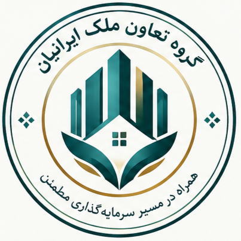

شرکت راهبردی زمین و ملک ایرانیان
مجموعه تخصصی بالادست در زنجیره ارزش زمین، ملک، مسکن، توسعه دارایی و حوزههای مرتبط؛ مسئول جهتگیری کلان قلمرو تخصصی، پرتفوی و هماهنگی ظرفیتهای مشترک.
شبکهای تخصصی برای پیوند دادن تعاونیهای مسکن، مالکان، عرضهکنندگان، متقاضیان، سرمایهگذاران و متخصصان بازار ملک؛ با تمرکز بر شفافیت اطلاعات، ساماندهی فرصتها، پشتیبانی از پروژهها و ایجاد مسیرهای قابلپیگیری برای معامله و همکاری.
گروه تعاون ملک ایرانیان بهعنوان یکی از زیرمجموعههای تخصصی و مستقل «شرکت راهبردی زمین و ملک ایرانیان» تعریف میشود. هویت و خدمات آن در بیرون مستقل دیده میشود؛ درون مجموعه نیز با راهبردها، استانداردها و ظرفیتهای مادر هماهنگ عمل میکند.

مرز میان هویت مستقل گروه و پیوند سازمانی آن با مجموعه تخصصی زمین و ملک.
مجموعه تخصصی بالادست در زنجیره ارزش زمین، ملک، مسکن، توسعه دارایی و حوزههای مرتبط؛ مسئول جهتگیری کلان قلمرو تخصصی، پرتفوی و هماهنگی ظرفیتهای مشترک.
بازوی تخصصی بازار و همکاریهای تعاونی؛ متمرکز بر ساماندهی عرضه و تقاضا، شبکه تعاونیها، پروژههای مسکن، خدمات معامله و پیوند بازیگران بازار.
ایجاد شبکهای منظم و قابلاعتماد برای همکاری تعاونیها و بازیگران بازار ملک؛ از معرفی فرصت و تطبیق عرضه و تقاضا تا مستندسازی، پیگیری قرارداد و توسعه خدمات پشتیبان.
تبدیلشدن به شبکهای تخصصی در ساماندهی پروژهها و خدمات تعاونی و ملکی؛ با دادههای قابلردیابی، فرایندهای شفاف و همکاری با متخصصان واجد صلاحیت.
کاهش پراکندگی اطلاعات و هزینه جستوجو، افزایش قابلیت مقایسه فرصتها، نظمبخشیدن به ارتباطات و فراهمکردن مسیر روشنتر برای بررسی و پیگیری معامله.
گروه بر نقش شبکهساز، ساماندهنده و هماهنگکننده خدمات متمرکز است. ورود به فعالیتهای تخصصی یا مجوزمحور تابع صلاحیت قانونی، قرارداد روشن و امکان اجرای واقعی خواهد بود.
ثبت و دستهبندی نیازها و فرصتها، جستوجو، مقایسه، معرفی طرفهای مرتبط و مدیریت سرنخهای معاملاتی.
معرفی تعاونیها، ساماندهی اطلاعات پایه، اطلاعرسانی، مسیرهای پاسخگویی و ابزارهای هماهنگی پروژه و اعضا.
نمایه پروژه، موقعیت، مرحله پیشرفت، طرفهای مسئول، وضعیت مدارک و اطلاعاتی که انتشار معتبر آن احراز شده باشد.
ثبت پیشنهادهای فروش یا مشارکت و تفکیک شفاف ملک کامل، سهم، امتیاز یا حقوق قراردادی؛ بدون یکسانانگاری ماهیت حقوقی آنها.
ساماندهی فرصتهای سرمایهگذاری، تعریف اطلاعات پایه و معرفی طرفهای بالقوه؛ همراه با افشای ریسک و پرهیز از وعده سود تضمینشده.
دسترسی به الگوها، چکلیست مدارک، مسیر بررسی و خدمات کارشناسان واجد صلاحیت؛ با تعیین حدود مسئولیت گروه و ارائهدهندگان خدمت.
ارتباط با کارشناسان، مشاوران حقوقی، مهندسان، ارزیابان، مدیران پروژه و ارائهدهندگان خدمات مجاز بر اساس صلاحیت و سوابق قابل بررسی.
پیگیری تعهدات، معرفی خدمات مدیریت ملک و پشتیبانی، ثبت بازخورد و نگهداری سابقه تعامل در حدود توافق و مقررات حریم خصوصی.
ساخت واژگان یکسان، گزارش روند عرضه و تقاضا و داشبوردهای مدیریتی بر پایه دادههای دارای منبع، تاریخ و سطح اطمینان.
برای هر خدمت باید نقش، ورودی، خروجی و مسئول مشخص باشد.
| حوزه | مسئولیت پیشنهادی گروه | مرز و کنترل لازم |
|---|---|---|
| مدیریت بازار | ساختاردهی اطلاعات عرضه و تقاضا، انتشار و تطبیق فرصتها | اعتبار و مالکیت ادعاها سطحبندی شود؛ انتشار آگهی به معنای احراز حقوق نیست. |
| تعاونی و پروژه | ثبت پروفایل، مرحله پروژه، ارتباطات و گزارشهای مجاز | اسناد، تعهدات و اختیار نمایندگان باید از مرجع مسئول بررسی شود. |
| قرارداد و حقوق | دسترسی به الگو و متخصص و پیگیری فرایند | مشاوره حقوقی تخصصی یا تأیید رسمی فقط با صلاحیت و قرارداد مربوط انجام میشود. |
| سرمایهگذاری | ساماندهی اطلاعات فرصت و افشای مفروضات و ریسکها | از تضمین سود، جمعآوری وجوه یا عرضه ابزار مالی بدون مجوز و چارچوب قانونی پرهیز شود. |
| داده و حریم خصوصی | حداقلسازی داده، تعیین دسترسی و نگهداری سوابق | رضایت، مبنای قانونی پردازش، مدت نگهداری، امنیت و حذف داده تعریف شود. |
| تضمین و شکایت | تعریف سازوکار شکایت، ارجاع و پیگیری | وعده تضمین یا پوشش مالی نیازمند تعهد قراردادی روشن و توان واقعی ایفای آن است. |
پیوندهای این گروه باید هم در مسیرهای ناوبری و هم در معماری همکاری روشن باشند؛ هر بخش هویت و مسئولیت خودش را حفظ میکند.
مرجع هماهنگی راهبردی حوزه زمین و ملک، همافزایی خدمات، مدیریت پرتفوی و اتصال گروه به خانواده تخصصی مرتبط.
مشاهده طرح شرکت مادر ← راهبری کلانلایه کلان معماری مجموعه برای چارچوبهای مشترک، هماهنگی سازمانی و ظرفیتهای پشتیبان در صورت تصویب و نیاز.
مشاهده طرح هلدینگ ← نقشه منظومهنمای کلی از جایگاه طرحها، نسبتهای پیشنهادی و نحوه تکمیل زنجیره همکاری میان اجزای منظومه.
مشاهده نقشه منظومه ← فهرست مرجعدسترسی به سایر طرحهای ثبتشده و بررسی جایگاه هر طرح در کنار پروژههای مستقل و خانوادههای تخصصی.
رفتن به فهرست طرحها ← پروژه نمونه مسکن تعاونیطرح مدیریتی و اجرایی برای پروژه ۱۶۰ واحدی معرفیشده در چالکرود رامسر؛ شامل شناسنامه، راهبری، زمان و هزینه، کنترل کیفیت، ارتباط با اعضا، تحویل و الگوی قابلاستفاده برای پروژههای دیگر.
مشاهده طرح جامع آفتاب رامسر ← محصول مستقلمخزن وبسایت مستقل گروه؛ محل توسعه تجربه بیرونی، صفحات خدمات و محصولات دیجیتال اختصاصی.
ورود به مخزن وبسایت ← اتصال فنی در آیندهاتصال فنی پس از تعریف شناسههای مشترک، مالک داده، سطح دسترسی، قرارداد تبادل و مسئولیت هر طرف انجام میشود.
مشاهده معماری داده ←| طرف رابطه | نقش در همکاری | مرز استقلال | وضعیت پیشنهادی |
|---|---|---|---|
| شرکت راهبردی زمین و ملک ایرانیان | هماهنگی راهبردی حوزه زمین و ملک، همافزایی خدمات، مدیریت پرتفوی و معرفی فرصتهای مرتبط | گروه مسئول محصول، تجربه مشتری و عملیات تخصصی خود است؛ خدمات مشترک با توافق تعریف میشوند. | رابطه ساختاری در معماری هدف؛ جزئیات اجرایی نیازمند مصوبه و توافق |
| شرکت جامع راهبردی ارشد ایرانیان | راهبری کلان، استانداردهای مشترک و ظرفیتهای پشتیبان در صورت تصویب و نیاز | ارتباط از مسیر ساختار سازمانی معتبر و شرکت تخصصی بالادست تعریف میشود. | هماهنگی در سطح معماری؛ دامنه اختیار تابع اسناد معتبر |
| سایر طرحها و شرکتهای تخصصی | همکاری پروژهای در داده، فناوری، خدمات، سرمایه یا دسترسی به بازار | مالکیت یا وابستگی صرفاً بهدلیل همکاری موضوعی فرض نمیشود. | موردی؛ با تعریف خروجی، مالک، هزینه و سطح خدمت |
وبسایت موجود گروه، دروازه معرفی و دسترسی به خدمات است. پنل تعاونی، داشبورد پروژه، سامانه درخواست، امضای الکترونیکی یا اتصال دادهای باید بهعنوان اجزای مرحلهای تعریف شوند و تا زمان پیادهسازی واقعی، قابلیت عملیاتی فرض نشوند.
بستههای خدماتی برای تعاونیها یا کاربران حرفهای، مشروط به ارزش مشخص و پشتیبانی قابل ارائه.
هزینه شفاف برای خدمات مشخص مانند معرفی یا مدیریت فرایند، با رعایت مقررات مربوط.
قراردادهای ساماندهی اطلاعات پروژه، مدیریت هماهنگی یا گزارشسازی.
گزارشها و ابزارهای تحلیلی مبتنی بر داده مجاز و با رعایت حریم خصوصی.
مدل معرفی یا همکاری قراردادی با تعیین مسئول خدمت، پرداخت و مسئولیت حرفهای.
خدمات جدید پس از بررسی تقاضا، هزینه اجرا، مجوز، ریسک و ظرفیت پشتیبانی افزوده میشوند.
تکمیل هویت و پیام، ممیزی صفحات، دستهبندی خدمات، استاندارد انتشار و قواعد حریم خصوصی.
پایلوت محدود با تعاونیها یا عرضهکنندگان منتخب و سنجش کیفیت تطبیق و زمان پاسخ.
تکمیل ثبت و پیگیری، نقشهای کاربری، کنترل کیفیت داده، پشتیبانی و گزارش مدیریتی.
توسعه منطقهای بر اساس شواهد بازار، توان تیم، مجوزها و پایداری اقتصادی.
تعریف شناسهها، تبادل داده و خدمات مشترک با شرکت تخصصی بالادست بر پایه توافق روشن.
بازبینی شاخصها، شکایتها، ریسکها، مدل درآمد و کیفیت خدمات و اصلاح نقشه راه.
| بعد | شاخصهای پیشنهادی | نکته سنجش |
|---|---|---|
| بازار | عرضه معتبر، تقاضای فعال، نرخ تطبیق، زمان رسیدن به گزینه مرتبط | تعریف «معتبر» و «فعال» ثابت و قابل ممیزی باشد. |
| تعاونی و پروژه | تعاونی فعال، پروژه دارای اطلاعات کامل، بهروزرسانی بهموقع | ثبتنام یا ایجاد صفحه بهتنهایی نشانه فعالیت واقعی نیست. |
| کیفیت خدمت | زمان پاسخ، نرخ تکمیل فرایند، رضایت، شکایت و زمان حل شکایت | شاخصها به تفکیک نوع خدمت و مخاطب تحلیل شوند. |
| اقتصادی | درآمد تحققیافته، حاشیه مشارکت، هزینه جذب، هزینه خدمت و مطالبات | درآمد تحققیافته از ارزش فرصت یا مبلغ معامله تفکیک شود. |
| ریسک و انطباق | خطای اطلاعات، رخداد امنیتی، اختلاف قراردادی و خدمات خارج از صلاحیت | برای هر رخداد، مسئول رسیدگی و اقدام اصلاحی ثبت شود. |
سطحبندی وضعیت اطلاعات، ثبت منبع و تاریخ، گزارش تخلف، بازبینی دورهای و توقف انتشار در موارد پرریسک.
تفکیک آگهی از احراز مالکیت؛ تعیین مدارک لازم و ارجاع به مرجع یا متخصص واجد صلاحیت.
افشای نقشها و منافع، ثبت معیار معرفی فرصت و تفکیک تصمیم تجاری از بررسی مستقل.
ممیزی خدمت پیش از عرضه، تعیین مسئول قراردادی و توقف فعالیت فاقد مجوز یا صلاحیت لازم.
عدم تضمین سود یا نتیجه، افشای فرضیات، کنترل جریان نقدی و تعیین حدود تعهد مالی.
پشتیبانگیری، کنترل دسترسی، ثبت رویداد، حداقلسازی داده و برنامه واکنش به رخداد.
پیش از تبدیل طرح به برنامه اجرایی، موارد زیر باید با اطلاعات واقعی و تصمیم مسئولان مربوط تکمیل شوند.
| موضوع | خروجی موردنیاز | وضعیت |
|---|---|---|
| ساختار حقوقی و رابطه سازمانی | اسناد یا توافق معتبر درباره رابطه گروه با شرکت تخصصی بالادست | معماری هدف توصیف شده؛ جزئیات حقوقی نیازمند احراز |
| مالک محصول و عملیات | مسئول، اختیارات، فرایند تصمیم و پاسخگویی | الگوی پیشنهادی؛ نیازمند تعیین مسئول واقعی |
| سبد خدمت و مجوزها | خدمات قابل عرضه، حدود مسئولیت، قرارداد و مجوز موردنیاز | نیازمند ممیزی حقوقی |
| مدل مالی | بودجه، درآمد، هزینه، سناریوها و نقطه سربهسر | نیازمند داده واقعی بازار و هزینه |
| داده و فناوری | مدل داده، سیاست دسترسی، امنیت، اتصالها و نگهداری | اصول معماری تعریف شده؛ پیادهسازی جداگانه ارزیابی شود |
| پایلوت و معیار عبور | محدوده آزمایش، شرکای اولیه، شاخص موفقیت و معیار توقف | برای برنامه اجرایی لازم است |
هر پروژه سند مستقل، شناسنامه، وضعیت مدارک و مسیر تصمیمگیری خودش را دارد؛ اطلاعات یک پروژه نباید به پروژه دیگر تعمیم داده شود.
طرح مدیریت و اجرای پروژه در چالکرود رامسر؛ اطلاعات معرفیشده و موارد نیازمند تأیید در سند مستقل تفکیک شدهاند.
مشاهده طرح پروژه ←پروژه مسکن · مطالعات پایهطرح پایه شناخت و امکانسنجی پروژه در منطقه ۲۱ تهران، محدوده وردآورد؛ نزدیک پمپ بنزین و ایستگاه مترو وردآورد، بر اساس اطلاعات اولیه ارائهشده.
مشاهده طرح پروژه ←